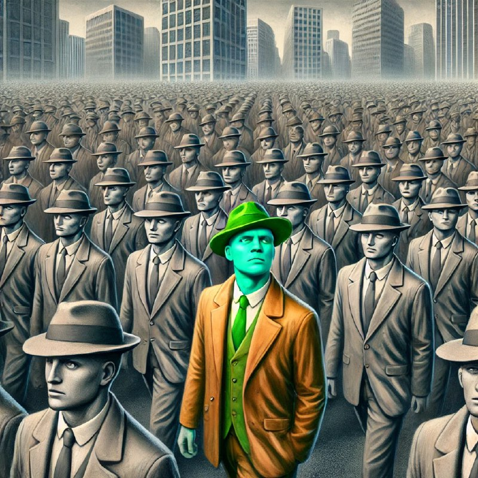

Пассив ижтимоий босим

Инсон туғилганиданоқ унинг атрофида қоидалар, чекловлар ва жамият томонидан ўрнатилган доиралар пайдо бўлади. Уларнинг кўпчилиги, афсуски, шахсий эркинликни чеклашга, ўзига хосликни йўқ қилишга қаратилган. Ҳаммага ўхшаш бўлиш, оммадан ажралмаслик – мана шу кўпчиликка сингдирилган асосий ғоя.
Одамлар бир-бирига қараб, бир-бирига тақлид қилиб яшайди. Ўзини намоён қилиш, ўз қарашларини ҳимоя қилиш ўрнига, улар тайёр қолипларга киришга ҳаракат қилади. Бундай ҳаётнинг оқибати – шахсиятнинг сўниши, руҳий тушкунлик ва ҳақиқий ҳаётнинг йўқотилиши.
Ҳар бир инсон такрорланмас шахс, унинг ўзига хос ўйлари, ҳис-туйғулари, орзулари ва қадриятлари бор. Аммо жамиятдаги “қоида”лар, “меъёр”лар буни унутиб, барчани бир хил йўналишда ҳаракат қилишга мажбур қилади. Кўпчилик бу тазйиққа дош беролмай, шахсий фикрини қурбон қилиб, умумий оммавийликка айланади.
Бундай ҳаёт ҳақиқий ҳаёт эмас – бу жонсиз, туйғусиз механик мавжудликдир. Ҳар ким худди бир қолипдан чиққан одамга айланади, шахсий қарашлар ва эркин фикрлаш ўрнига “жамият нима деса, ўшани бажариш” энг асосий қоидага айланади.
Лекин ҳақиқий инсон ўзини топган, ўз йўлини танлаган инсондир. У ўзига хослиги билан гўзал, фикрлаш эркинлиги билан буюк, шахсий қадриятлари билан яшовчи зотдир. Ҳаётни бошқалар каби бир қолипда ўтказишдан кўра, уни ўз йўлида, ўз руҳий танлови билан кечириш беҳисоб қимматлидир.
💬💬💬